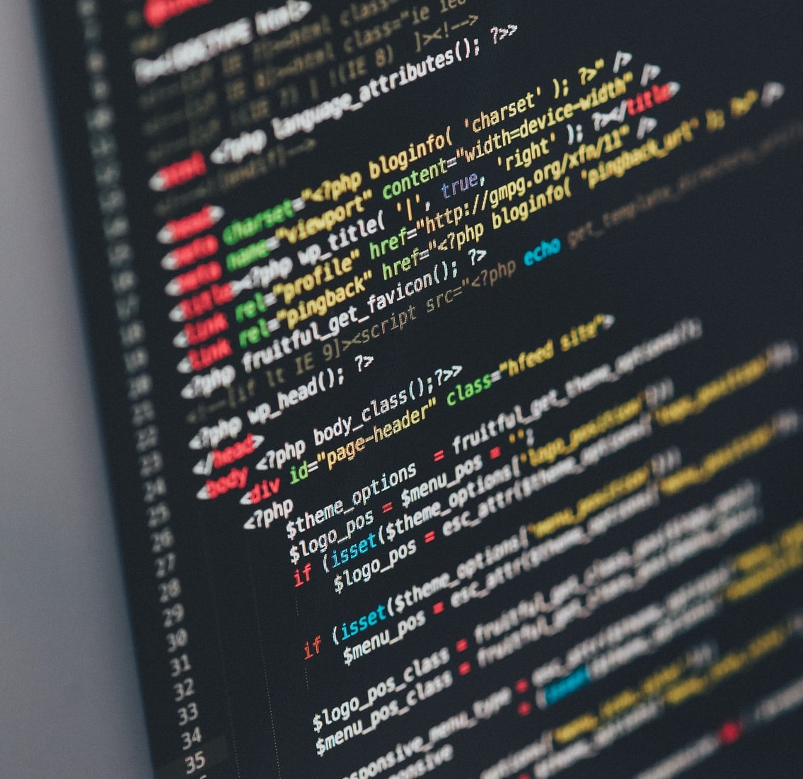

Computer security is very important as it can help keep your bank details, your emails, and everything else on your computer safe from malicious attacks. An example of computer security is encryption, which is demonstrated on the page titled "Ceaser Cypher." Only 10% of safeguards are technical when it comes to computer security. The other 90% depends on the user using good computing practices, like making a good password. You can learn more about how to make a good password on the page titled "Passwords."
